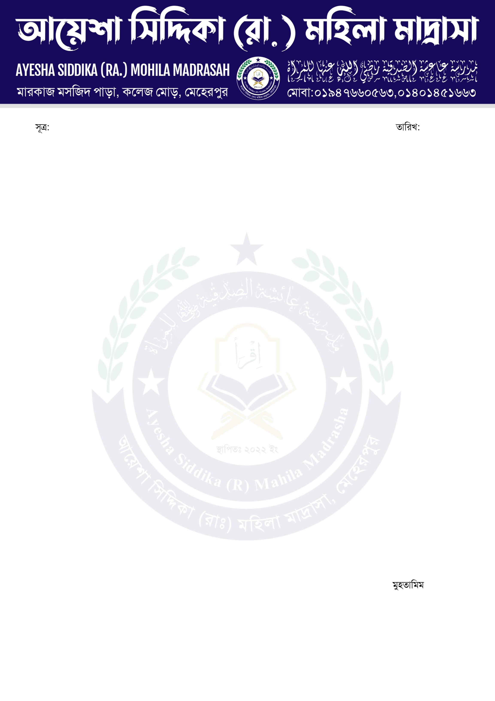

শব্দ গুলো দেখে সকলেই অবাক হয়েছে, এটা বলা বাহুল্য। অনেকেই ভাবছেন, এ সব শব্দের বেশিরভাগটাই নিজে থেকে বানানো। তবে সত্যটা হলো, এর একটাও বানানো নয়। সব গুলোই বাংলা ভাষার অংশ। উৎপত্তি অনুসারে বাংলাভাষার যে শ্রেনীবিভাগ রয়েছে, সেই পাঁচটি শ্রেনী বিভাগের ফলেই জন্ম নিয়েছে এই সকল শব্দ, যার অনেকগুলোই আপনি আপনার এই পর্যন্ত জীবনে একবারও শোনেননি।শব্দ গুলো দেখে সকলেই অবাক হয়েছে, এটা বলা বাহুল্য। অনেকেই ভাবছেন, এ সব শব্দের বেশিরভাগটাই নিজে থেকে বানানো। তবে সত্যটা হলো, এর একটাও বানানো নয়। সব গুলোই বাংলা ভাষার অংশ। উৎপত্তি অনুসারে বাংলাভাষার যে শ্রেনীবিভাগ রয়েছে, সেই পাঁচটি শ্রেনী বিভাগের ফলেই জন্ম নিয়েছে এই সকল শব্দ, যার অনেকগুলোই আপনি আপনার এই পর্যন্ত জীবনে একবারও শোনেননি।